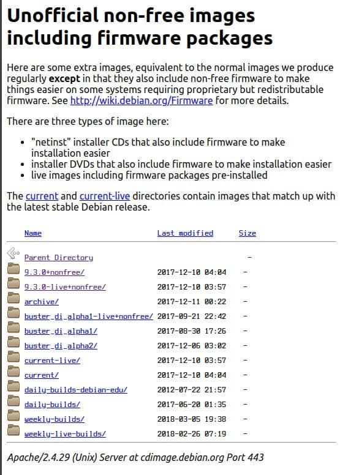

Откуда скачивать Debian?
Posted in: debian.
В Debian существуют набор критериев Debian Free Software Guidelines (DFSG), по которым определяется, является ли программное обеспечение свободным.
Если программное обеспечение свободное, то оно входит в официальную поставку Debian и является частью дистрибутива. Всё свободное программное обеспечение расположено в разделе main.
Существует свободное программное обеспечение, для работы которого необходимы несвободные библиотеки или программы. Это программное обеспечение считается частью дистрибутива, и размещается в разделе contrib.
Также есть несвободное программное обеспечение, без которого невозможно полноценное использование дистрибутива. Например, драйвер какой-нибудь карточки Wi-Fi. Такое программное обеспечение не может входить в официальную поставку Debian и не является частью дистрибутива. Всё такое программное обеспечение расположено в разделе non-free.
Это всё конечно хорошо, но на практике совсем всё по-другому. Например, решили вы установить Debian на свой ноутбук. Зашли на официальный сайт, перешли по ссылке где взять Debian, выбрали нужный вам вариант, скачали, установили. Загрузились, и первое с чем сталкиваетесь, не работает Wi-Fi. “Почему?! На другом дистрибутиве Linux у меня Wi-Fi работал из коробки! Что за хрень этот Debian?!” - скажете вы.
Вот поэтому, чтобы не делать себе голову беременной при первом знакомстве с Debian, скачивайте нужный вам образ из Unofficial non-free images including firmware packages:

Это избавит вас от лишних телодвижений во время установки и после. Отличие от официальных образов заключается в том, что в этих образах присутствует программное обеспечение из раздела non-free. Вам не нужно будет перед установкой самостоятельно готовить ещё один носитель с нужными микропрограммами для вашего оборудования, а после установки не придётся сразу редактировать sources.list для того, чтобы добавить тотже раздел non-free.